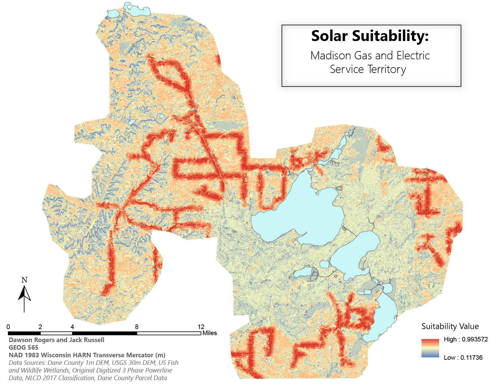

This map illustrates the Northern Night Sky and how light pollution has diminished the
depth of the night sky. The projection additionally incorporates the style of older navigational maps.
Star Map

This map is the final output of a solar suitability investigation near Madison, WI. While not cartographically impressive,
the raster overlay sum method allowed for the combination of several criteria, leading an overall index of regions conducive to solar installations.
This map is an excerpt from a longform storyboard about the relationship between excessive nutrient output and the nearby lake health.
The bivariate map shows the status of the lakes and animal outputs across the state of Minnesota. Click the link for the full longform pdf!
Minnesota Lake Eutrophication
The Canadian airport map explores the useful clarity of a greyscale map, showing the passenger counts of Canadian airports through proportional symbols.
This map illustrates the Northern Night Sky and how light pollution has diminished the depth of the night sky. The projection additionally incorporates the style of older navigational maps.
Star MapThis map is the final output of a solar suitability investigation near Madison, WI. While not cartographically impressive, the raster overlay sum method allowed for the combination of several criteria, leading an overall index of regions conducive to solar installations.
This map is an excerpt from a longform storyboard about the relationship between excessive nutrient output and the nearby lake health. The bivariate map shows the status of the lakes and animal outputs across the state of Minnesota. Click the link for the full longform pdf!
Minnesota Lake EutrophicationThe Canadian airport map explores the useful clarity of a greyscale map, showing the passenger counts of Canadian airports through proportional symbols.